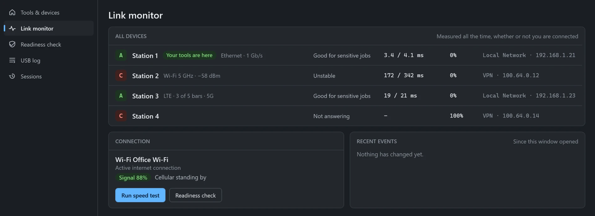
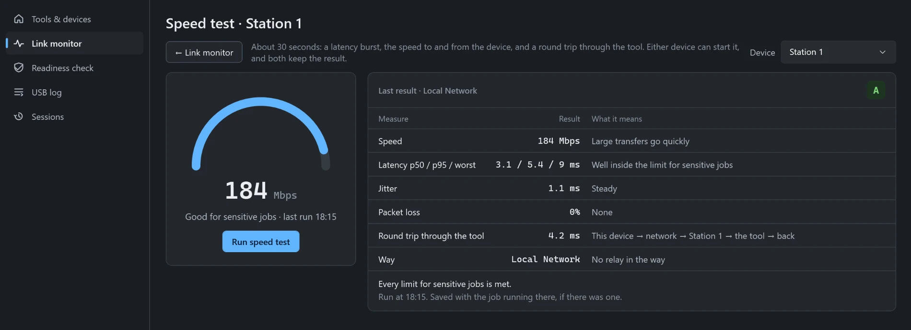
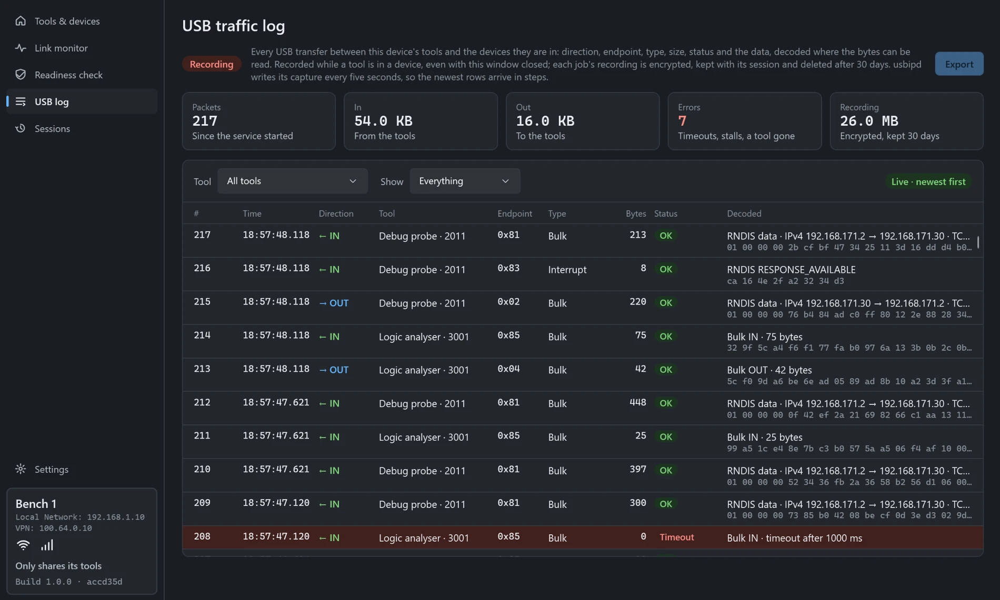
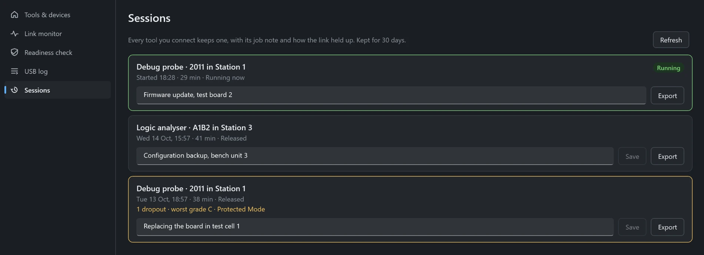
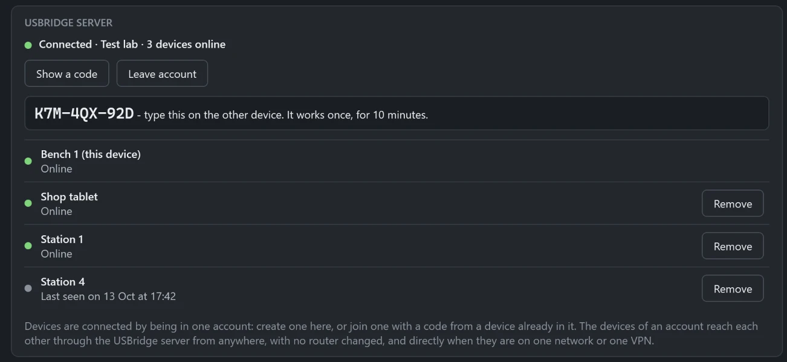

Plug a USB tool into one device and use it from another, whether it is in the next room, on your VPN or across the internet, as if it were plugged in there. For shops, labs, industry and any team whose USB tool is not where its software is.
Install USBridge on each device. A Windows device can share its tools, receive tools from other devices, or both. The Android app shares its tools.
Put the devices in one account. Create the account on one device, then join it from each of the others with a short code. Devices never search the network for each other, and there are no addresses to type.
On the device the tool is plugged into, pick the tool and press Connect to a device. The tool works there as if it were plugged in. Press Release when you are done.
What it does
Devices in one account
Devices join an account with a code. Each device lists the others in its account and nothing else.
Share and receive
Every Windows device can share its tools and receive tools from others. The Android app shares its tools.
Every connection at once
Tools can go over every connection a device has at once (Wi-Fi, Ethernet, mobile data), or over one connection you choose. If one drops, the tool carries on over the other.
Link figures for each pair
For each pair of devices there is one set of figures: latency, jitter and loss, with a grade from A to C. Both devices show the same figures, measured on the route the tool's data takes.
Speed test
Either device can start a speed test. It shows the slower direction, and both devices keep the result.
Protected Mode
For work that must not be interrupted. The device stays awake, and its tools cannot be released or taken over until you turn it off.
Job records
Each connection is recorded with the link over time and a USB traffic recording. A job can be exported for support.
Remote Desktop button
A device's card has a button that opens Remote Desktop to that device.
One device at a time
A tool connects to one device at a time, and every device shows who has it.
Automatic updates
USBridge updates itself. On Windows it installs updates only when no tool is connected.
In the app
The USBridge window on Windows. The devices and names shown are made up.
Finutia USBridge

Link monitor: one row for each device, with its grade, latency, loss and the way it is reached.
Finutia USBridge

Speed test: one speed, the slower direction, with latency, jitter, loss and the round trip through the tool.
Finutia USBridge

USB log: every transfer between a tool and the device it is in, with its direction, size, status and data.
Finutia USBridge

Sessions: a record of each job, with a note you write and an Export button.
Finutia USBridge

Settings: show a code to add a device to the account. The devices in the account are listed below it.
Requirements
Windows 10 or 11, 64-bit, on each device that shares or receives tools.
For the Android app, which shares its tools: Android 13 or newer.
Administrator rights to install.
Download
Windows
Downloads the latest version, checks it, and starts the installer.